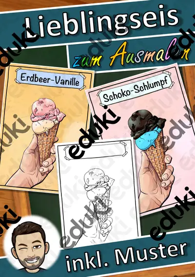

Geschenk zum Aufklappen: Ausmalbild mit Überraschung, Klasse 1–4
Das Geschenk ist zu. Wer am Blatt zieht, klappt es auf – und eine Überraschung springt heraus. Die Kinder malen an, falten zweimal und haben ein Bild, das sich bewegt. Mit einem leeren Blatt für die eigene Überraschung.
Einsatz im Unterricht: Adventszeit, Morgenkreis, Klassenleiterstunde, letzte Schultage vor den Ferien, Vertretungsstunde. Ausdrucken und loslegen.
Texte KI-gestützt und von mir geprüft. Die Bilder sind eigene KI-gestützte Zeichnungen (keine Fotos).
Enthalten (8 Seiten): 4 Aufklapp-Bilder mit Überraschung · 1 Blatt für die eigene Überraschung · Faltanleitung in Bildern auf jedem Blatt
FachUnterricht
KlasseKl. 1–4
SchulformGrundschule
MaterialartArbeitsblätter
Ähnliche Materialien

Advents-Ideen Gesamtpaket: 11 Materialien für die Adventszeit, Klasse 1–4

Oster-Ausmalbilder, Ausmalbilder für Ostern - Klassenzimmergestaltung

Ausmalbild - Mein Lieblingseis (Sommerferien) - Eis zum Ausmalen

Jahreszeiten-Werkstatt: Ostern: Ausmalbilder mit Wörtern – Plus-Paket, Klasse 1–4

Materialpaket Griechische Götter - Lückentexte mit Wortspeicher, Plakate und Ausmalbilder

Abstrakte Winterbilder - Winter-Bilder zum Ausmalen - Winterkunst - Klassenzimmerdekoration - Fensterbilder - Ausmalbilder

Steckbrief zu Papst Leo XIV. inkl. Ausmalbilder